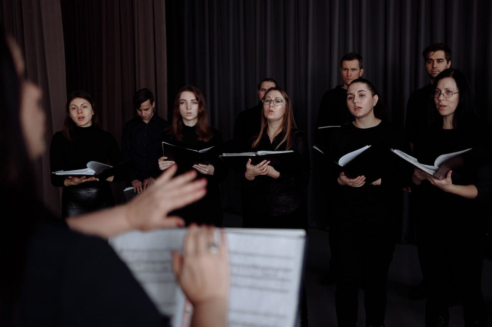
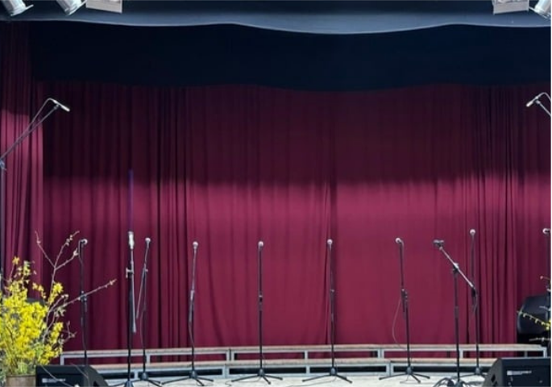
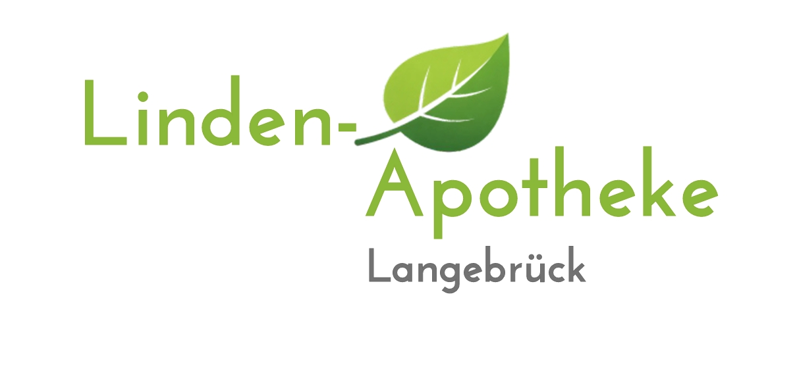

Ein Abend voller Stimmen und Energie
Popchöre des Dresdener Nordens – Live in Concert
Paukenschlag PopChor & Pop Vocals
Eintritt frei

Konzert
Live
Veranstaltungsort
Bürgerhaus Langebrück
„Live in Concert“ mit den Popchören des Dresdener Nordens: Paukenschlag PopChor aus Klotzsche und den Pop Vocals aus Langebrück. Ein musikalischer Nachmittag voller Pop, Chorklang und gemeinsamer Konzertstimmung.
Anfahrt
Mit Bus und Bahn – von den Haltestellen fußläufig erreichbar.
Mit PKW – begrenzte Parkmöglichkeiten vorhanden.
Mit dem Fahrrad – Es gibt Möglichkeiten zum Anschließen.
Zu Fuß – Perfekt! Garderobe ist vorhanden.
Sponsor

Linden-Apotheke Langebrück
Gesundheit, die zu Ihrem Leben passt. Verlässlich. Persönlich. Vor Ort.
Mitwirkende Chöre
Paukenschlag PopChor
Pop Vocals